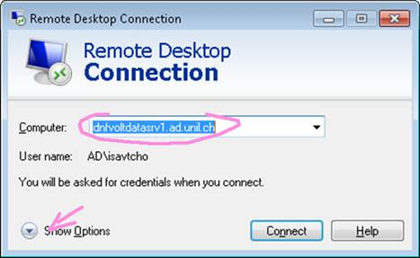
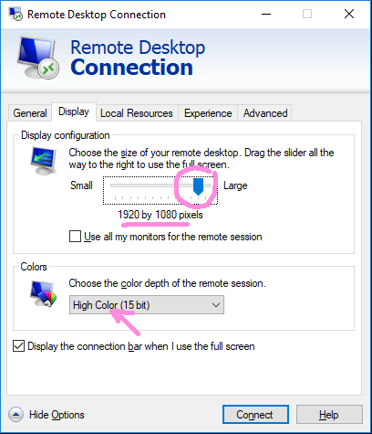
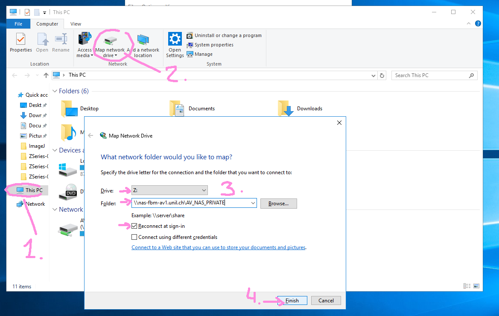
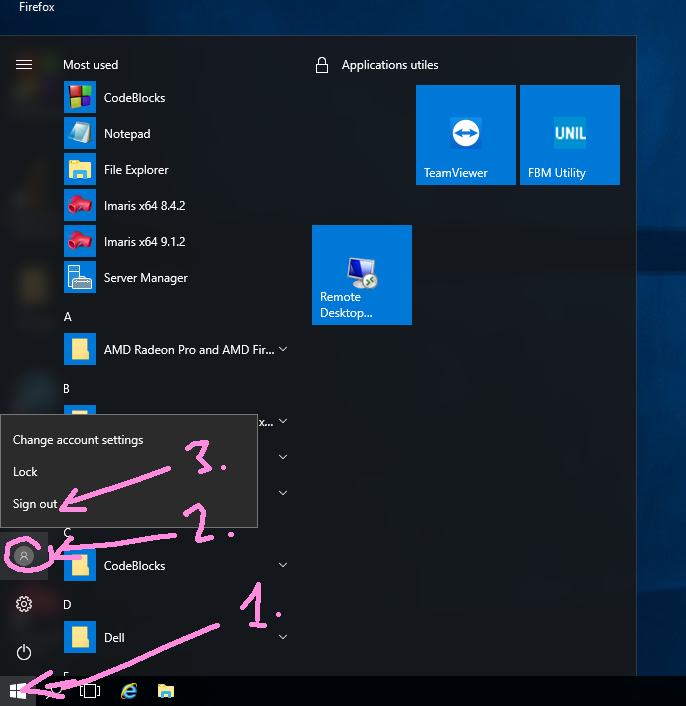
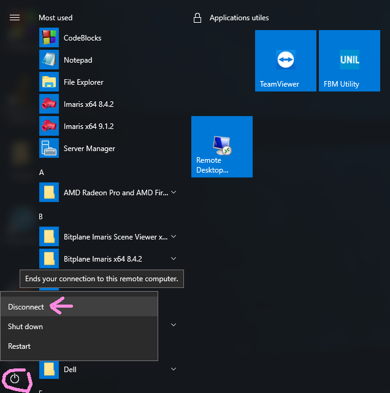

Computing Servers
We actually count with 3 servers. Two of them are physically in the room and we count with a wireframe at UNIL computing facilities (NAS).
To use the computer remotely go to "How to conect?" tutorial.
Don't shut down the computer, disconect your session when your work is over
dnfvoltdatasrv1.ad.unil.ch
- IP: 130.223.196.100
- CPU: 48 Cores
- RAM: 512GB
- Graphic card: Radeon WX7100
- Storage: 2TB SDD
- Software: Imaris 8.4.2/Imaris 9.1.2/Matlab R2015b-R2018/ImageJ
- Frequent users: Cedric, Iaroslav and Carlos
- Pending upgrades: 1TB RAM
dnfvoltdatasrv2.ad.unil.ch
- IP: 130.223.196.101
- CPU: 16 Cores
- RAM: 512GB
- Graphic card: Radeon WX7100
- Storage: 2TB and:
- Iaroslav Disk 625GB
- Other Disk 600GB
- Software: Imaris 8.4.2/Matlab/ImageJ/LLastik/Blender
- Frequent users: Barbara and Iaroslav
- Pending upgrades: 1TB RAM
Relevant points
- Do not shutdown these machines. Please do not restart these machines if other users are still connected, without asking!
- Volterra NAS can be accessed natively by mapping \nas-fbm-av1.unil.ch\AV_NAS_PRIVATE to a disk letter (e.g. Z: , see picture below). Use \nas.unil.ch for the UNIL NAS. Use can also directly type these into the Explorer address bar.
- For fastest connection (especially from home), use the lowest color depth setting for Remote Desktop settings (High Color 15-bit setting). If you have a High-DPI screen (such as 3200 x 1800, common on modern laptops), you will also get much better speed by reducing your display screen resolution to e.g. 1920 x 1080 before connecting.
- Already installed are: Matlab R2016a, ImageJ, and Imaris 8.4 and 9.0. Imaris 9.0 is only working on dnfvoltdatasrv1 (but there is a limit on UNIL licenses, so best to try in the morning before everyone arrives). If you do not get a license, you can also use 8.4 on dnfvoltdatasrv2 (license is always available for the moment)
- Try to avoid saving your documents to the local C: drive (i.e. your Desktop, My Documents, etc.). Please use NAS or your external drives instead. We only have 1 TB capacity for C: , so it will fill up fast. To attach an external USB drive, you will have to physically access the machine and plug your disk into one of the USB ports.
- When you are done, please “Sign out” instead of disconnecting (see below how to do that).
- Since the RAM and video card are shared, please close the programs you do not use, particularly Imaris. One important trick is to minimize the Imaris windows if you leave them open for a long time: there is a bug where the video RAM will keep getting eaten up over time, leading to a crash, unless the window is minimized.
- You can view total RAM consumption through the Task manager, as well as check how much is in use by the other users (see below)
- To connect from home, use Pulse Secure first to get onto UNIL network. Please make sure your personal computer is virus-free.
- If you have old accounts on the dnfvoltdatasrv2 machine, these can still be used
- The machines will be restarted weekly on Saturday nice in order to install the updates (on Sunday 1 AM, actually). If this is not OK for you (running computations, etc), we can postpone the shutdown manually: just get in touch.
NAS storage
The lab counts with various NAS that offers storage.
If you want to connect you can access directly from the explorer adreess line or in mac from the finder > go to option.
UNIL NAS
This NAS belongs to university and every member of the lab has a folder that can use.
To access to this NAS use this address: nas.unil.ch
Volterra Lab NAS
This NAS is for private use in the laboratory. Every member has a folder on it.
- 10 gigabits (1gb/user)
- RAID6
- Secondary backup per day at 1am with backup explorer.
- In Sunday it does a parity check.
To access to this NAS use this address: nas-fbm-av1.unil.ch/AV_NAS_PRIVATE (On windows: nas-fbm-av1.unil.ch\AV_NAS_PRIVATE)
2018 Upgrade:
28 Disk of 10TB SATA 6GB/s -> 0,28 Petabytes
Upgrade made by art computer
How to connect to servers?
Windows
- To connect from your desktop or laptop:
 
- To connect to NAS:

- To log off:

- To disconnect, and leave your programs running, click Disconnect (or simply close the Remote Desktop window):

Mac
Donwload the application Remote Desktop Connection and follow the instructions for the windows tutorial.
Supercomputing UNIL services
In case that we need more computational power in task that doesn't require a graphic interaction we could apply for an account in some of the supercomputing cluster that UNIL has.
List of HPC services
Types of scientific computing resources available at the Ci:
The new features are higlighted in blue
Argos
Argos is an Intel Xeon based 8 cores interactive compute server offering GPGPU capabilities:
- Job category: Any suitable interactive job
- Access: via ssh to argos1.unil.ch
- OS: Redhat ELS 6.1
- CPUs: 1 x dual Xeon 5570 2.97 GHz node (8 cores), 24 GB RAM
- GPGPU:
- 1 x Nvidia Tesla c1060 (220 CUDA cores)
- 1 x Nvidia Tesla c2070 (448 CUDA cores)
- Network:10 Gb/s Ethernet
Hippocrate
Hippocrate is a small 96 cores Intel Xeon based HPC cluster:
- Job category: Any suitable parallel job or any sequential long (< 96h) running job. A maximum of 1000 jobs per user in the queuing system
- Access: via ssh to argos1.unil.ch
- OS: RedHat ELS 6.1
- Nodes:
- 8 x dual Xeon 5670 2.97 GHz (12 cores), 48 GB RAM for batch processing
- 1 x dual Xeon 5670 2.97 GHz (12 cores), 96 GB RAM for interactive jobs
- GPGPU: 3 x Nvidia Tesla m2090 (512 CUDA cores) on 2 batch and 1 interactive nodes
- Interconnect: Infiniband 40 Gb/s
- Network: 10 Gb/s Ethernet
- -Parallel env.
- SMP (on 12 cores)
- PVM
- MPI : OpenMPI, MVAPICH
Grid computing
The users of UNIL have also access to two grid-based infrastructures:
GridUNIL
A Condor based campus grid with ~ 300 distributed cores mainly on OSX and some on Linux or Windows platform and a grid distributed version of the R statistic environment - Job category: any suitable short (< 12h) embarrassingly parallel jobs
- Access: via argos1.unil.ch
SMSCG
The Swiss Multisciences Computing Gridwith ~ 4000 cores mainly on Intel/Linux platform - Job category: depends on the type of the targeted grid enabled resources
CADMOS
CADMOS is the Center for Advanced Modeling Science. It is a joint initiative between UNIL EPFL and UNIGE. They offer an access to massively parallel computing resources currently based on an IBM BlueGene/P.
Procedure to request access
Alexandre must sent a requirement to the administrator of those servers that will give us access.